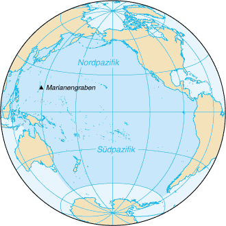
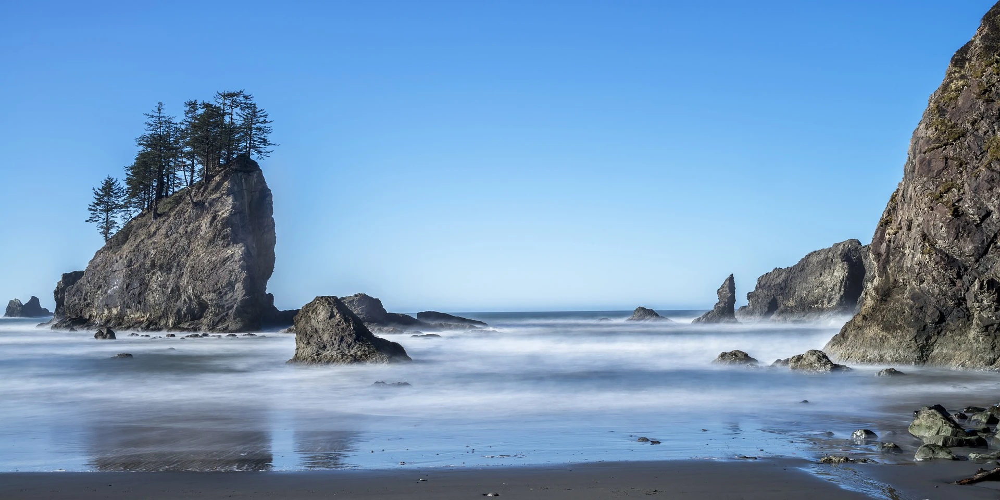

Auf den Punkt
Der Pazifische Ozean (lateinisch pacificus ‚friedlich‘), auch Pazifik, Stiller Ozean oder Großer Ozean genannt, ist der größte und tiefste Ozean der Erde und grenzt an alle anderen Ozeane. Die Pazifische Küste erstreckt sich, im Uhrzeigersinn über Neuseeland, Australien, Ostasien und die Westküste von Nord- und Südamerika.
Ozean Part 1
Am 28. November 1520 erreichte Ferdinand Magellan aus der Magellanstraße kommend auf seiner Weltumsegelung den Pazifik oder Stillen Ozean. Er nannte ihn Mar Pacifico (Portugiesisch und Spanisch für Friedliche See), weil die ihn bis dahin begleitenden Stürme sich legten.
Trotz dieses Namens gibt es im Pazifik auch heftige Stürme und Wirbelstürme, die je nach Region Taifun (Nordwestpazifik), Hurrikan (Nordostpazifik) oder Zyklon (Südpazifik) genannt werden.
Ozean Part 2
Die zahllosen Inseln des Südpazifik werden mehr nach kulturellen als nach geographischen Gesichtspunkten in die Archipele Melanesien, Polynesien und Mikronesien unterteilt.
Zu Melanesien gehört mit Neuguinea die zweitgrößte Insel der Welt.Neuseeland und die umliegenden Inseln wie z. B. die Chathaminseln werden üblicherweise zu Polynesien gezählt, geologisch gehören diese zum unterseeischen Kontinent Zealandia.
Ozean Part 3
Einige größere Inseln und Inselgruppen am Rande des Pazifiks sind in ihrer Zuordnung umstritten. Das sind Feuerland (Chile) und die vorgelagerten Inseln in der Drakestraße, die am Übergang zum Atlantik liegen, Taiwan und die Philippinen, die am Rand zum Südchinesischen Meer liegen und Tasmanien (Australien), das gelegentlich zum Indischen Ozean gezählt wird. Weiter südlich existieren noch einige antarktische und subantarktische Inseln wie die Peter-I.-Insel, die Scott-Insel und die Balleny-Inseln, die im Allgemeinen zum Südlichen Ozean gezählt werden.
Ozean Part 4
Die Fläche des Ozeans beträgt mit Nebenmeeren 181,34 Mio. km², ohne die Nebenmeere 166,24 Mio. km², was rund 35 Prozent der gesamten Erdoberfläche oder die Hälfte der Meeresfläche der Erde und damit mehr als die Fläche aller Kontinente zusammen ausmacht. Sein Volumen beträgt mit Nebenmeeren 714,41 Mio. km³, ohne die Nebenmeere 696,19 Mio. km³ – mehr als die Hälfte allen Wassers auf der Erde. Während seine mittlere Tiefe mit Nebenmeeren 3.940 m (4.188 m ohne Nebenmeere) beträgt, liegt seine tiefste Stelle etwa 11.000 m unter dem Meeresspiegel.
Auf den Punkt Part 2
Ein Strudel aus Plastikteilen schwimmt etwa tausend Kilometer nördlich von Hawaii und umfasst dabei eine Fläche von rund 7000 km² – etwa die dreifache Größe des Saarlands. Der Plastikmüll stammt zu ca. 80 % vom Festland, vor allem aus China, und wird über die Flüsse ins Meer gespült. Der restliche Teil kommt von Schiffen, die ihre Abfälle über Bord werfen. Die Plastikteile treiben bis zu 16 Jahre in diesem Strudel und stellen eine große Gefahr für die Fauna dar. Durch die Reibung der Wellen zerfällt der Müll zu immer kleineren Teilen, löst sich aber nicht ganz auf. Mikroplastik wurde bereits im Benthal des Marianengrabens entdeckt.